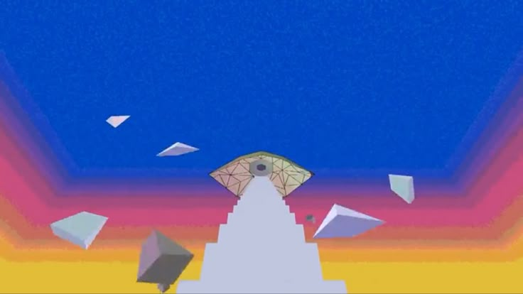
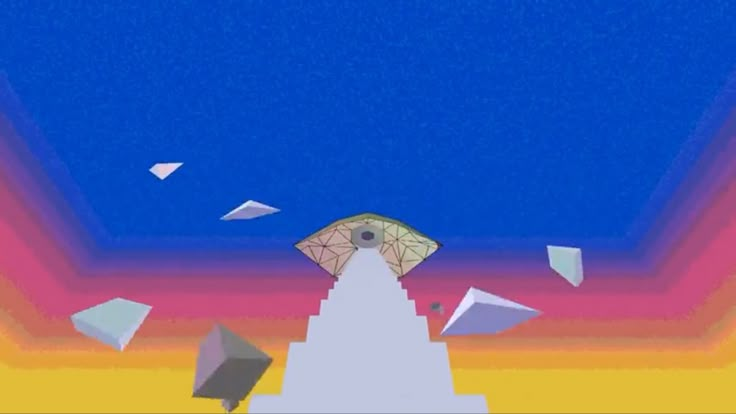
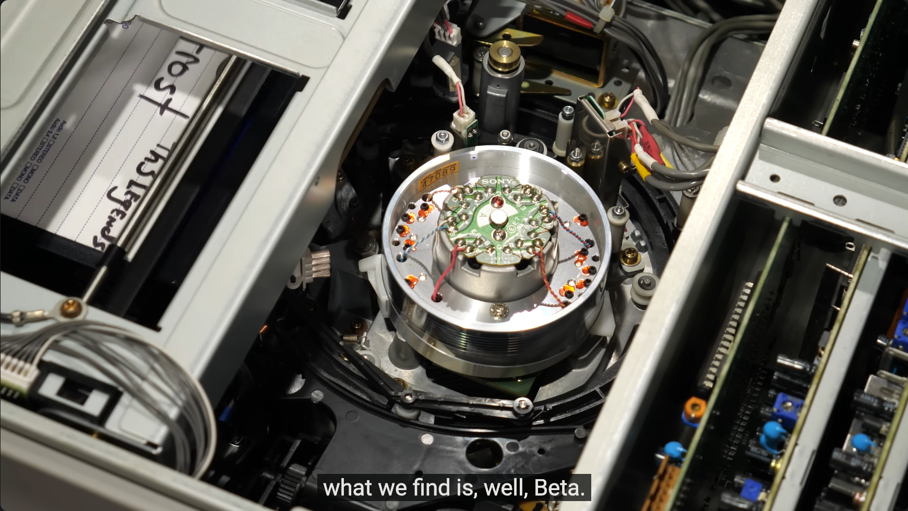
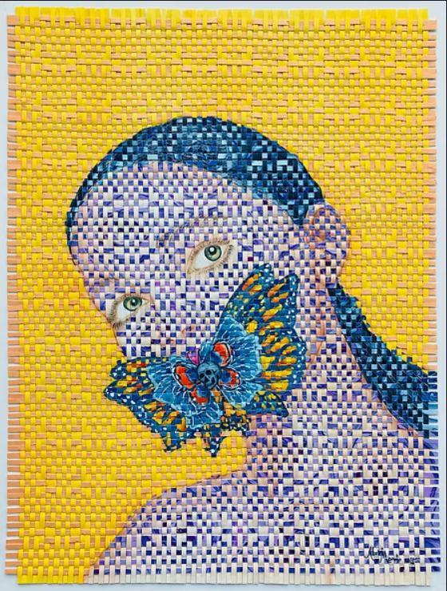
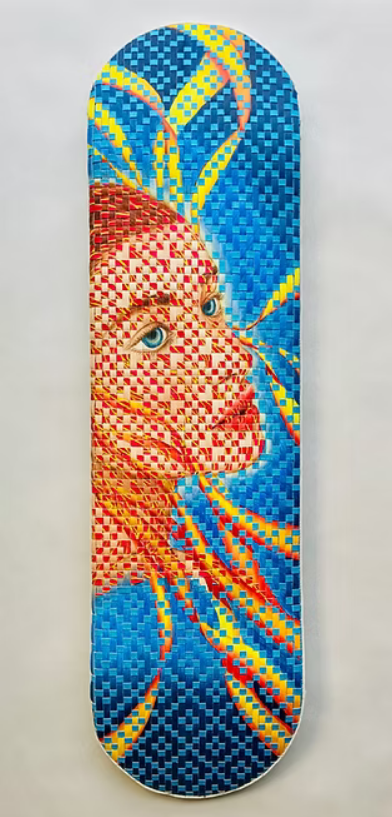

Joel G
 

Joel G is a digital animation and 3d artist that makes short film webseries and most recently, videogames. His animations are contrived stories and meaning rendered with painstaking detail and love. Most all of his works but especially his most recent have been community efforts with other very talented people behind it.
Alec Watson
A you tuber posting under his Technology connections account, making technical explanations of consumer electronic products. He goes painstakingly in depth about what makes these products work and explains the physics behind their construction. He Discusses everything from RCAs Vinyl video disc format to 70 year old sunbeam toasters. I love his content because he has a passion for good design while not explicitly saying so. You clearly see his frustration and joy with these products all while he goes in depth about the science behind them.
Abel Manalo
 I saw his work at the 111 Minna street gallery in the Skate exibit, up until June 20th I recommend you go. He makes woven painted tapestries that are stunning. I spoke with him at the opening and he has a complete feel for the medium and his process uses very little layout or jigs to assist the process.